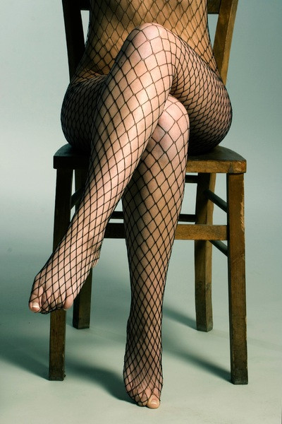
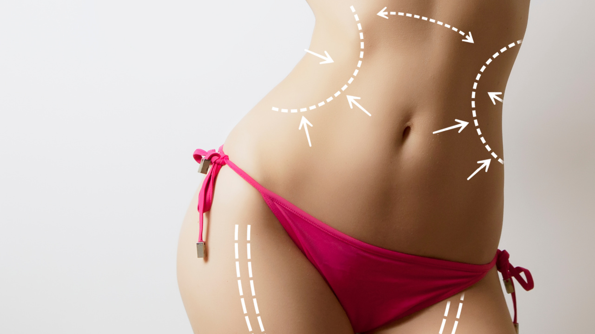
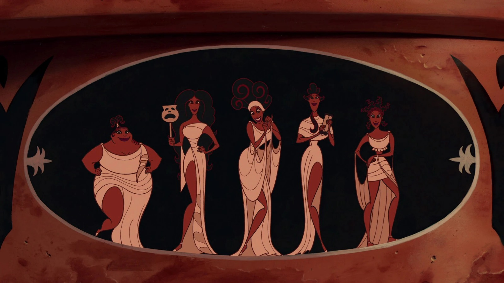
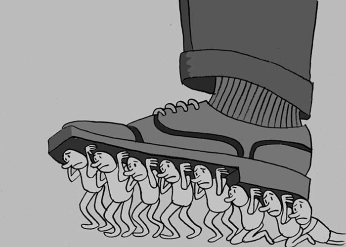
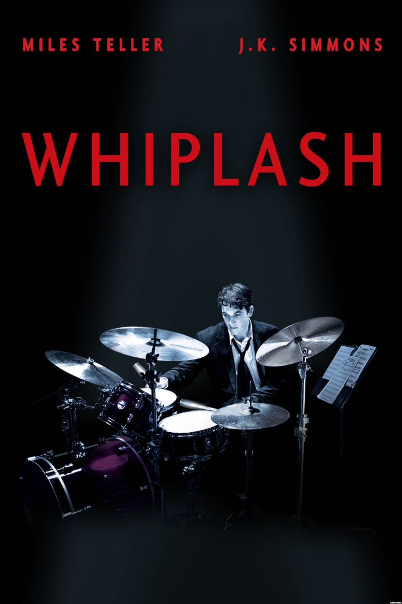
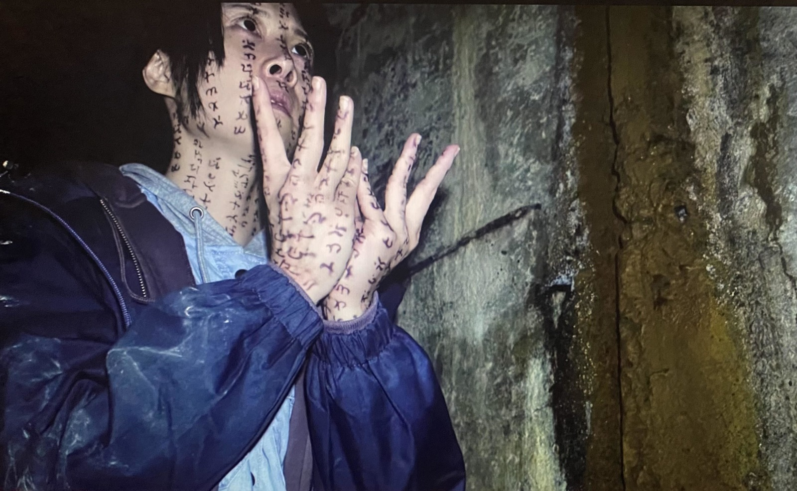

En mi opinión, David Le Breton muestra que el cuerpo no es solo algo biológico, sino que también adquiere significado según la sociedad y la cultura en que vivimos. Me parece interesante porque muchas ideas que consideramos normales (como la belleza, la salud o la forma correcta de vestir) en realidad han sido construidas socialmente. El texto también invita a cuestionar los modelos que privilegian cuerpos jóvenes, “perfectos” y productivos, ya que pueden excluir otras formas de vivir y experimentar el cuerpo.
Unidad 1
Una aproximación al cuerpo como experiencia social, cultural y como objeto dentro de la sociedad de consumo.
¿Qué entiendo por cuerpo?
Primera mirada
Cuerpo como construcción social
Segunda mirada
Cuerpo como consumo


En mi opinión, Baudrillard permite ver cómo, dentro de la sociedad de consumo, el cuerpo de las mujeres suele ser tratado más como un producto que como parte de una persona con identidad, decisiones y experiencias propias. La publicidad, la moda y las redes sociales presentan constantemente cuerpos femeninos como imágenes que deben ser atractivas, jóvenes y “perfectas” para llamar la atención o vender algo. Esto puede reducir a las mujeres a su apariencia física y hacer que se valore más cómo se ven que lo que piensan, sienten o hacen.
Me parece importante cuestionar esta idea porque no debería existir una obligación de cumplir con un modelo de belleza para ser aceptada. El cuerpo no es mercancía ni decoración: es parte de una persona y merece respeto, diversidad y autonomía.
La belleza 'funcional', de cualidad a obligación

Desde la perspectiva de Baudrillard, la belleza deja de ser simplemente una cualidad física y se convierte en un signo que debemos construir y mantener para ser reconocidos socialmente. Las Musas de Hércules representan la belleza como una cualidad deseable: su apariencia, gracia y sensualidad forman parte de aquello que las hace atractivas y admiradas. Sin embargo, con Jocelyn Wildenstein podemos observar cómo esta cualidad puede transformarse en una obligación, donde el cuerpo se convierte en un objeto que debe ser constantemente modificado para responder a los ideales de belleza.
En este sentido, como plantea Baudrillard, no solo consumimos productos para transformar nuestro cuerpo, sino que consumimos una determinada imagen de lo que significa "ser bella". Desde Le Breton, además, el cuerpo está atravesado por las normas y significados de la sociedad en la que vivimos. Así, la belleza deja de ser únicamente algo que tenemos y pasa a ser algo que debemos demostrar y mantener constantemente.
Fragmentar el cuerpo para volverlo un signo
Siguiendo la misma narrativa de Baudrillard, el cuerpo deja de ser percibido como un todo y puede fragmentarse en diferentes signos que representan belleza, deseo y estatus. Esto puede observarse en las Kardashian, donde ciertas partes del cuerpo —como los labios, la cintura, los glúteos o el rostro— adquieren un valor propio y se convierten en características que pueden ser imitadas, modificadas y consumidas.
Algo similar ocurre con algunas actrices porno, cuyo cuerpo puede ser presentado y valorado a partir de partes específicas, convirtiéndolas en objetos de deseo y consumo. De esta manera, el cuerpo ya no importa únicamente por lo que es, sino por lo que sus diferentes partes significan dentro de una sociedad que constantemente construye y vende ideales de belleza y sexualidad.
Unidad 2
El poder, la disciplina, la autoexplotación y el rendimiento sobre el cuerpo.
Primera mirada
¿En qué momentos del día tu cuerpo sigue horarios, normas, filas, exámenes, cámaras, métricas o instrucciones?

Desde la perspectiva de Foucault, el cuerpo deja de ser simplemente una entidad biológica o una posesión personal y se convierte en un territorio investido por el poder, disciplinado y administrado para responder a los estándares de utilidad y normalidad. En el Antiguo Régimen, el cuerpo del rey sostenía de manera física el orden político, encarnando la autoridad soberana; sin embargo, hacia el siglo XIX, el foco se desplaza hacia la administración de la sociedad como un cuerpo social que no nace del consenso, sino del adiestramiento y el control. Con tecnologías cotidianas como los relojes, las cámaras de vigilancia, los carnets, las métricas o las aplicaciones móviles, podemos observar cómo la norma se transforma en una vivencia diaria, donde el cuerpo debe responder constantemente a horarios, exámenes, posturas y dinámicas de rendimiento.
En este sentido, como plantea Foucault, el poder no opera únicamente prohibiendo o castigando desde el Estado, sino que produce activamente los deseos, comportamientos y hábitos de los sujetos. Si con Le Breton el cuerpo se concibe como una propiedad que se fabrica ("tengo un cuerpo") y con Baudrillard como un capital de consumo ("invierto en mi cuerpo"), con Foucault la corporalidad pasa a ser el reflejo de micropoderes que la observan, corrigen y clasifican. Así, la disciplina deja de ser algo externo que nos limita y se convierte en una rutina internalizada que debemos demostrar, obedecer y reproducir constantemente en cada espacio que habitamos.
Segunda mirada
¿El cansancio actual nace porque alguien nos obliga... o porque aprendimos a exigirnos sin descanso?
Byung-Chul Han plantea que, el cansancio deja de ser simplemente una reacción física al esfuerzo y se convierte en el síntoma visible de una sociedad que pasó del control externo a la autoexplotación voluntaria. Si con Foucault el cuerpo era disciplinado y corregido por instituciones que imponían un "debes" estricto, en la sociedad de rendimiento el sujeto se transforma en un "emprendedor de sí mismo" guiado por un mandato de positividad donde el "puedes" reemplaza a la prohibición. Con realidades cotidianas como la cultura del emprendimiento, la necesidad de actualización constante, la optimización personal y la culpa por descansar, podemos observar cómo la exigencia se interioriza hasta tal punto que la persona se convierte, al mismo tiempo, en verdugo y víctima de su propia productividad.
Tercera mirada
¿Si compartimos el mismo espacio físico, por qué no percibimos exactamente el mismo mundo?
Le Breton plantea que la percepción sensorial deja de ser un simple proceso biológico o un reflejo pasivo de la realidad y se convierte en una interpretación cultural e históricamente construida. Frente a la idea cartesiana de un sujeto puramente mental, Le Breton plantea que existimos primordialmente a través del cuerpo, de modo que "antes de pensar el mundo, lo sentimos". En el Antiguo Régimen o bajo la lógica de la modernidad disciplinaria el cuerpo solía abordarse desde la norma y el control, pero con Le Breton el foco se desplaza hacia la sensibilidad y la experiencia. A través de situaciones cotidianas —como compartir un mismo salón de clase, un bosque o el campus universitario— podemos observar cómo un profesional, una persona perdida o un vigilante perciben realidades completamente distintas según su historia personal, su educación y los valores de su cultura.
Cuarta mirada
La baqueta y la llaga: Whiplash o la amputación del sentir.

A partir de la metodología de análisis fílmico y la práctica de la écfrasis, la experiencia con este fragmento de la película Whiplash demuestra cómo la cámara traduce la tensión y la exigencia física en un impacto directo sobre la sensibilidad del espectador. En el plano de la estética sensorial, la secuencia genera una respuesta somática y visceral mediante planos detalle del sudor desbordado, la rigidez muscular en los brazos, la aceleración del metrónomo y las manchas de sangre fresca en la batería y las baquetas, haciendo que el espectador experimente una tensión física casi tangible. En la dimensión comunicacional, la escena nos confronta con la idea de la perfección artística a cualquier precio, obligándonos a cuestionar el papel del abuso, la violencia y la obsesión por la excelencia en la formación de un músico. La mirada implacable del director de orquesta y la autoexigencia desmedida del protagonista abren la discusión sobre hasta qué punto la búsqueda del talento termina por destruir la integridad física de una persona. Finalmente, en la dimensión poética, el ritmo vertiginoso del montaje induce estados de angustia, claustrofobia, hiperventilación y ansiedad, sumergiéndonos en el torbellino emocional de presenciar a alguien al borde del colapso psicofísico.
Desde la perspectiva de David Le Breton, esta experiencia con Whiplash adquiere una profundidad única, pues el sociólogo francés nos recuerda que antes que seres racionales somos seres sensoriales y encarnados: "antes de pensar el mundo, lo sentimos". En este fragmento, la batería deja de ser un instrumento externo para convertirse en una prótesis dolorosa que altera y reconfigura toda la sensorialidad del protagonista. Le Breton sostiene que la percepción no es neutra ni puramente biológica, sino que se encuentra educada y modulada por los valores de la cultura; en Whiplash, la búsqueda obsesiva del éxito reduce todo el universo sensible de Andrew a un único filtro sensorial hipertrofiado: el pulso implacable del metrónomo, el impacto táctil en las baquetas y la ceguera ante el propio dolor. Así, mientras la sociedad moderna enseña a desconectarnos del cuerpo o a utilizarlo como un mero objeto de rendimiento, la secuencia expone la noción lebretoniana del cuerpo como la frontera misma de la existencia humana. La sangre, la rigidez y el sudor no son solo datos visuales: son el testimonio de cómo una disciplina feroz llega a fracturar la afectividad y la relación del individuo con su propio organismo. El filme logra que el espectador no solo piense en la exigencia, sino que la sienta en la piel, demostrando la tesis de Le Breton de que el cuerpo es el territorio donde la cultura cobra vida, a veces a costa de la propia integridad física.
La carne profanada: Maleficio y el colapso de la frontera sensible

La experiencia con esta escena clave de Incantation (Maleficio) demuestra cómo el formato de found footage genera una inmersión directa en la vulnerabilidad y la perturbación del cuerpo humano. En el plano de la estética, la secuencia desencadena una respuesta visceral en el espectador mediante planos desestabilizadores de automutilación, cánticos rituales hipnóticos, la deformación progresiva del rostro y la presencia del dolor físico sin filtro, obligando a quien observa a experimentar una tensión somática e incómoda en su propio cuerpo. En la dimensión comunicacional, la escena invita a cuestionar la frontera entre el fervor religioso, la paranoia psicológica y el sometimiento del cuerpo ante fuerzas o mandatos que lo superan, haciendo pensar en cómo el cuerpo se convierte en el recipiente o canal de una maldición o trauma no resuelto. Finalmente, en la dimensión poética, el uso del encuadre subjetivo y el realismo crudo del material encontrado generan estados de terror claustrofóbico, perturbación profunda, desasosiego y repulsión, sumergiendo al espectador en el abismo emocional de presenciar la ruptura total de la integridad física y mental.
Al integrar el pensamiento de David Le Breton a esta lectura de Incantation, la experiencia del horror corporal revela una dimensión antropológica aún más profunda. Le Breton plantea que el cuerpo es la frontera sensible del ser humano en el mundo, la materia a través de la cual otorgamos sentido a la realidad y construimos nuestra identidad. En este clip de Maleficio, la pérdida de control corporal —reflejada en la automutilación y la deformación facial— opera como la ruptura definitiva de esa frontera protectora. Si para Le Breton el cuerpo nos pertenece y es moldeado por los significados culturales que nos sostienen, el ritual de la maldición desarticula completamente esa soberanía, convirtiendo la carne en un mero receptáculo pasivo de una fuerza alienante.
Asimismo, Le Breton nos enseña que las percepciones no son ajenas a la cultura ni al cuerpo del otro: "percibir es interpretar", y el dolor ajeno despierta en nosotros una resonancia somática directa. Al emplear el recurso del found footage y la cámara en primera persona, la película no solo muestra el horror, sino que lo transfiere sensorialmente al espectador, alterando su propia corporalidad a través del malestar, la tensión muscular y el desasosiego. El horror no está únicamente en la entidad demoníaca, sino en la fragilidad de nuestra propia encarnación: la escalofriante constatación de que el cuerpo, ese territorio donde habitamos y sentimos el mundo, puede ser invadido, reconfigurado y destruido desde su propio interior.